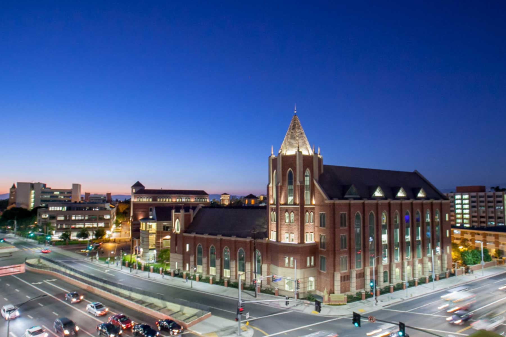
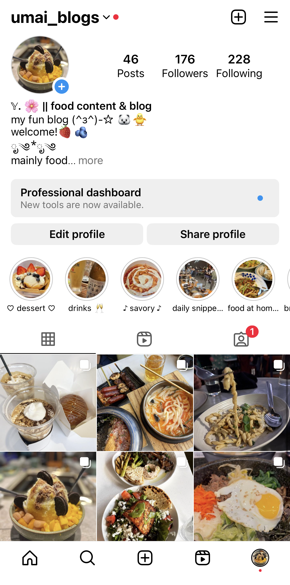
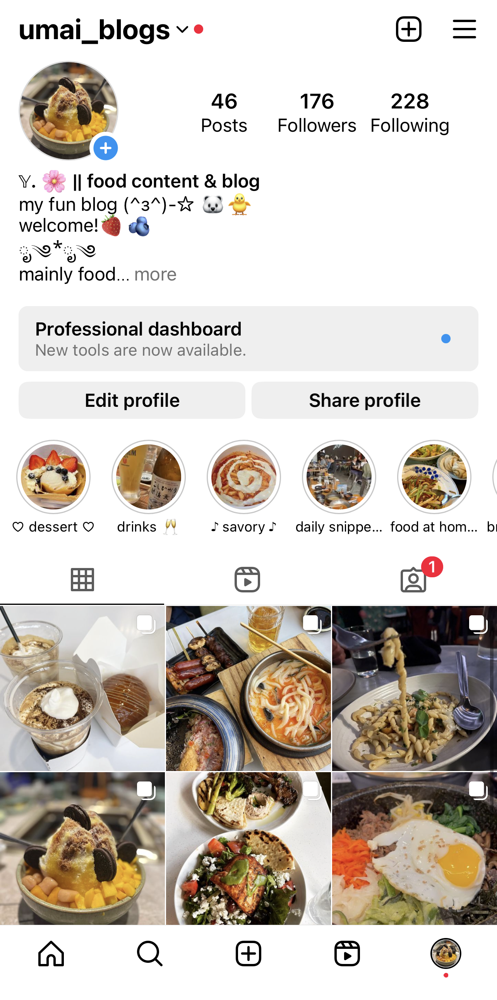

Yirena Wu
Los Angeles, California
(626) 922-1898 | yirenawu@usc.edu | LinkedIn

Objective
My name is Yirena and I'm currently pursuing a major in Business Administration from the University of Southern California's Marshall School of Business. I'm passionate and curious about researching consumer behavior, team management, human resources, marketing, and communications. Through my business journey, I hope to continue to explore the intersection of human relationships, creative design, and problem-solving.
Education
John A. Rowland High School
Aug. 2018 - June 2022
- High School and International Baccalaureate (IB) Diploma
University of Southern California, Marshall School of Business
Aug. 2022 - May 2026
- B.S. in Business Administration - STEM Designated
Experience
USC American Language Institute
Sept. 2022 - Present
Undergraduate Student Consultant
- Led weekly meetings offering individualized guidance to support international (Ph.D.) teaching assistants' (iTAs) cultural assimilation to USC, improve their teaching presentations, and English language proficiency
- Practiced extensive articulation of ideas in both Mandarin and English to bond with and advise iTAs
Arise To The Top Business Consulting
June 2023 - Aug. 2023
Human Resources Intern
- Designed new onboarding packets, job posts, and employee feedback processes to improve the experience of hirees
It's Boba Time
June 2021 - Aug. 2021
Barista
- Quickly adapted to customer service & learned food preparation in a fast-paced, understaffed start-up environment
 

Skills
Skills
- MS Office
- HTML (learning)
- Adobe Illustrator
Languages
- Bilingual in Mandarin and English
Interests
- Social Media Food Blog and Editing
- Dance
- Gaming